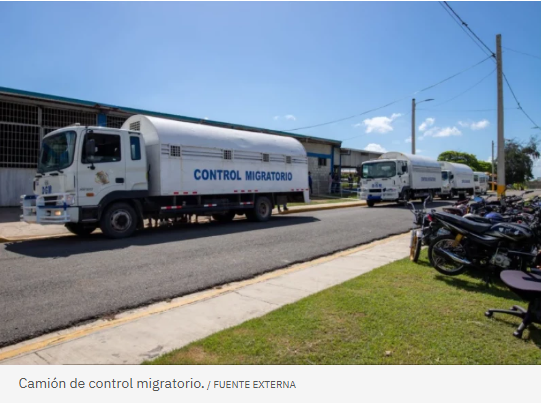
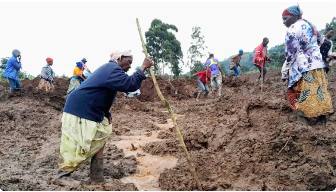

El presidente de Alianza País, Guillermo Moreno, calificó como violatoria de la carta magna dominicana la decisión del gobierno de Abinader
de autorizar al Departamento de Guerra de Estados Unidos el uso de la Base Aérea de San Isidro y del Aeropuerto Internacional de Las Américas
para operaciones logísticas militares.
El acuerdo a que arribaron el pasado miércoles el presidente Luis Abinader y el secretario de Guerra de Estados Unidos,Pete Hegseth ,
provocó ayer un amplio rechazo entre dirigentes políticos de partidos opositores, por entender que viola la Constitución de la República y
compromete la soberanía nacional. El presidente de Alianza País,Guillermo Moreno, calificó como violatoria de la carta magna dominicana la decisión del gobierno de
Abinader de autorizar al Departamento de Guerra de Estados Unidos el uso de la Base Aérea de San Isidro y del Aeropuerto Internacional de Las Américas para operaciones
logísticas militares.
Moreno advirtió que, aunque el Gobierno presenta el acuerdo como cooperación contra el narcotráfico, “en realidad se facilita la preparación de acciones militares contra Venezuela y Colombia, países hermanos
de la República Dominicana”.
Migración afirma muerte de bebé en Vacacional de Haina no fue por falta de atención médica
Autor: Miguel Araya
Migración dice que la madre llegó con su bebé 1:45 de la tarde del jueves 13, y una evaluación médica inicial determinó que ambos se encontraban en buen estado general de salud. br
Migración subraya que su atención no se limitó al bebé, sino que se extendió a la madre y otras partes involucradas inmediatamente después del suceso.

Redacion de Periodico Digital
Las llegadas de turistas internacionales aumentaron un 5 % en los primeros nueve meses de 2025
Redacción Internacional
Según la última edición del Barómetro del Turismo Mundial, más de 1,100 millones de turistas viajaron internacionalmente entre enero y septiembre de este año, unos 50 millones más que en el mismo período de 2024.
Los resultados reflejan una demanda de viajes sostenida durante todo el año a pesar de la alta inflación en los servicios turísticos y una confianza desigual de los viajeros debido a las tensiones geopolíticas y comerciales.
El tercer trimestre registró un aumento del 4 % con respecto a 2024, con una temporada de verano intensa en el hemisferio norte.
El Secretario General de Turismo de la ONU, Zurab Pololikashvili, afirmó que el turismo internacional ha seguido experimentando un crecimiento sostenido en lo que va de 2025 en
términos de llegadas internacionales y, sobre todo, de ingresos, "a pesar de la alta inflación en los servicios turísticos y las tensiones geopolíticas".
Las Américas registraron un crecimiento del 2 % durante este período, con un incremento del 3 % en el primer y segundo trimestre, pero una ligera caída en el tercer trimestre
(-1 %).
África
Por: Daniela Ruiz
Al menos 15 muertos y más de 100 desaparecidos tras deslizamientos de tierra que sepultaron viviendas en Uganda

Los equipos de rescate y la gente buscan cadáveres tras los deslizamientos de tierra provocados por las fuertes lluvias
en el distrito montañoso de Bulambuli, en el este de Uganda. Jean Watala/AP
(AP) – Al menos 15 personas murieron y otras 113 siguen desaparecidas después de que deslizamientos de tierra sepultaran casas en
seis aldeas del este de Uganda, dijo la policía. Otras 15 personas heridas han sido rescatadas e ingresadas en el Centro de Salud de Buluganya.
La Cruz Roja de Uganda dijo este jueves que se recuperaron 13 cadáveres después de que los deslizamientos de tierra enterraran 40 casas y que el
esfuerzo de rescate continuaba.
Los medios locales informaron que las autoridades esperan que el número de muertos pueda aumentar a 30.
Las fuerzas de seguridad de Uganda buscan a los responsables del homicidio de una pareja en su luna de miel
Los deslizamientos de tierra se produjeron tras las fuertes lluvias del miércoles por la noche en el distrito montañoso de Bulambuli,
donde los deslizamientos de tierra son habituales. El distrito está a unos 280 kilómetros al este de la capital, Kampala.
 Redacion de Periodico Digital
Redacion de Periodico Digital